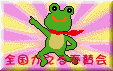

|
私も入っています。。 全国かえる奉賛会  全国かえる奉賛会に入会するには、自分のホームページに、上のバナーを貼り付けるだけ。どんどん入会しましょー。大王様に会うには、上の絵をクリック。ずっと奥に写真館があるぞ。 【かえる古新聞】
大王様へのメール
|
|
特訓カエル座り！ 面をかぶってカエル座り大流行！
やっぱ、女の子といえども、カエルの面をつけるからには、後ろ足をカエル股してもらって、ぐぐっと腰を落として、平泳ぎをする直前のような前足の姿勢でいてほしいよね。写真の男の子は、大王様主催『職場対抗・第一回カエル座りコンテスト』で優勝したランナー砂糖選手の勇姿である。みなも彼を参考にして、６月６日のカエルの日にカエルになりきってみよう！！ 目指そう総カエルファッション【横浜発=かおりちゃんねる同志記者】５月24日号で紹介した娘は、実はあのコートと一緒に、私は「カエル模様」の傘も買わされてました。購入翌日には娘の期待通りに雨が降って、傘の方は無事デビューしたのですが、レインコートを着る程の雨ではなかったので、こちらはまだ、皆様に披露していないようです。しかし、「雨など降りようもない」程良く晴れた日に行われた遠足の折にも、荷物で一杯のリュックに「カエル化コート」を忍ばせて出かけて行き、相当に喜んでいる様子が伺えます。おそらく、次は「けろちゃんの長靴」をねだられるはずだと、サイフの中味を確かめている所です。どんどん買い与えよう！【全国カエル奉賛会】ああー大王様は、うらやましいぞー。このごろの子供はたくさんのカエルファッションを身につけることができるんだからなあ。ぜひぜひ、カエルな娘さまが、カエルレインコートにカエル傘、カエル長靴を身につけて学校に行く日が来るように祈っているからね！そんな素敵な娘さんには、こうなったら、モリハナエさんとかに頼んで、カエルウエディングドレスも特注しておこう。カエルの日に『KRKR_MTG2』【東京発=KRKR-MTG】カエルフリーク達の集い"KRKR-MTG"(ケロケロミーティング)が、今年は、6月6日かえるの日(日本記念日協会認定)に堂々開催!!あなたのお気に入りのカエルとご一緒にお越し下さい!※お問い合せ：mtg2@ranadesign.com |
| ★平成９年1月10日 ☆1月18日 ★1月20日 ☆1月27日 ★2月8日 ☆2月10日 ★2月17日 ☆2月25日 ★3月2日 ☆3月8日 ★3月15日 ☆3月23日 ★3月27日 ☆4月5日 ★4月13日 ☆4月19日 ★4月25日 ☆4月29日 ★5月7日 ☆5月11日 ★5月20日 ☆5月28日 ★6月4日 ☆6月9日 ★6月14日 ☆6月22日 ★6月30日 ☆7月5日号 ★7月12日 ☆7月20日 ★7月27日 ☆8月2日 ★8月5日 ☆8月14日 ★8月22日 ☆8月27日 ★９月４日 ☆9月14日 ★9月26日 ☆10月5日 ★10月16日 ☆10月27日 ★11月3日 ☆11月10日 ★11月16日 ☆11月25日 ★12月2日 ☆12月9日 ★12月17日 ☆12月23日 ★平成10年1月1日 ☆1月11日 ★1月１8日 ☆1月22日 ★2月6日 ☆2月12日 ★2月18日 ☆3月1日 ★3月10日 ☆3月18日 ★3月23日 ☆3月30日 ★4月10日 ☆４月１９日 ★4月28日 ☆５月７日 ★5月15日 ☆５月24日 ★6月1日 |

|